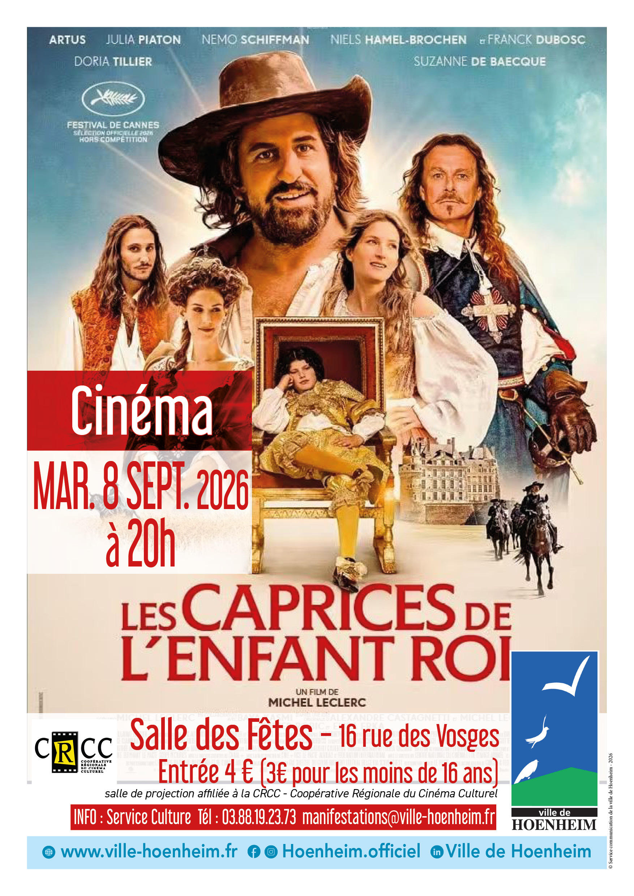

Cinéma : Les caprices de l’enfant roi
8 septembre à 20 h 00 min - 21 h 55 min
Navigation de l'événement

La ville de Hoenheim vous invite à une séance de cinéma le mardi 8 septembre 2026 à 20h à la salle des fêtes.
Plein tarif : 4 Euros / Tarif réduit (moins de 16 ans) : 3 Euros
Le film « Les caprices de l’enfant roi » est pour tout public.
Cette comédie dramatique, historique dure 1h 54min.
1651. Louis (pas encore XIV) est un jeune adolescent. Alors que la Fronde menace, sa mère Anne d’Autriche décide d’exfiltrer son fils pour le mettre à l’abri et le remplace par un sosie. Louis est confié par D’Artagnan à Cyrano de Bergerac qui le cache au sein de la troupe de théâtre de Madeleine Béjart et Molière. Tandis que Madeleine et Cyrano se découvrent une passion commune pour le jeune Molière, Louis découvre la vie et ses plaisirs, l’art et le travail, le courage et la stratégie, tout ce qui fera de lui le Roi Soleil.